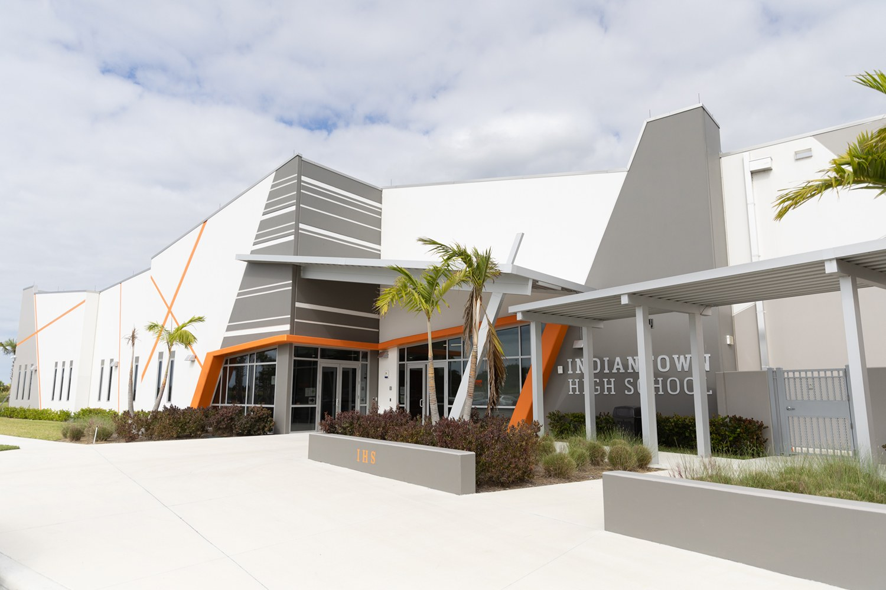
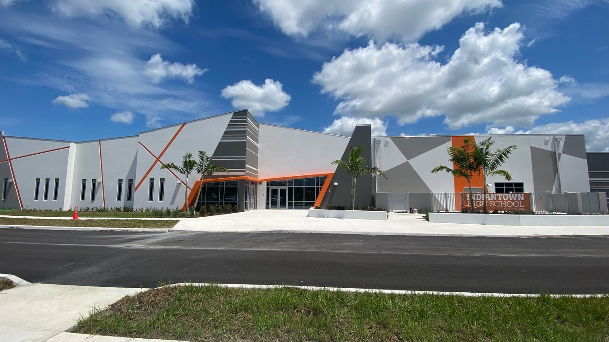

Indiantown High School
A new public high school in Martin County — ACG executed the interior glass scope: partition walls, interior storefront systems and secure-access glazing, for Core Construction.

Glass that keeps sightlines open.
Indiantown High School is a public high school in Martin County, FL — a new-construction educational facility serving the Indiantown community. The school features a large commons and cafeteria area, administrative and academic wings, and the kind of open, modern interior design that requires substantial interior glass to separate spaces while maintaining visibility and natural light throughout.
ACG was brought in to execute the interior glass scope — the partition walls, storefront systems and interior glazing that define the school's spaces from within.
The package ran throughout the facility: glass partition walls separating the commons from the media center and adjacent spaces, interior storefront systems at administrative and secure access points, and the blue-tinted glazed storefront visible from the main commons area.
The completed school.



Imagery via Indian River State College
Institutional work runs on a calendar.
School-calendar deadlines
Educational construction runs on strict schedules tied to school calendars — a missed TCO date on a school project has real consequences. ACG delivered the interior glass scope on time.
Secure-access storefronts
Interior storefront systems at administrative and secure access points, engineered for how a school actually operates.
Right on day one
Every unit plumb and every door operating correctly from day one — the standard for a building full of students.
More Martin County work.


Have plans? Send them to Connor directly.
Schools, government, institutional — ACG handles interior glass scopes with the same precision as any commercial project. Send your plans and get a scope in 48 hours.